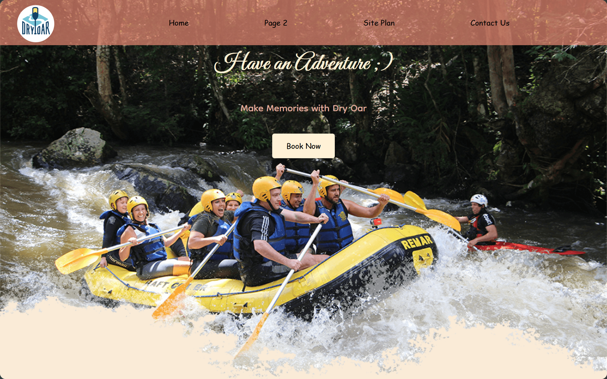

White Water Rafting
My website, Dry Oar Boating, is designed to promote whitewater rafting and outdoor adventures. It features sections about rivers, camping, and rapids, along with images of beautiful natural landscapes. The homepage encourages visitors to make memories, explore nature, and book an adventure. It also includes navigation links, calls to action, and contact information to help visitors learn more about the company. The overall goal is to make outdoor adventures appealing and encourage people to experience the beauty of nature.
View project